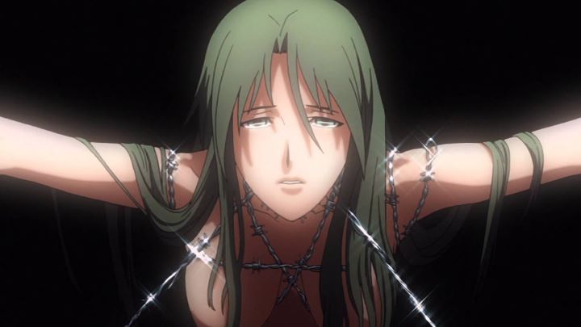

"Rin - Daughters of Mnemosyne" is an interesting show. The six hour-long-episode series was originally meant as a 10th aniversary project for some Japanese company you've never heard of, airing late at night to a small audience. It's an erotic-horror-thriller about a female detective and her assistant, who through certain circumstances, are rendered immortal, giving them all the more reason to be tortured and mutilated on camera for the sake of the show. At the very least, that brief description should have your attention, even if only to scare you completely from it. Hold on a second, there is merit to the series beyond gratuitous sex and violence. The story involves a fantasy element in modern Japan: a magical tree called Yggdrasil would release glowing invisible seeds into the air at regular intervals. If these seeds were to pass through the body of human female, they become immortal. If they pass through a human male, the man turns loses control of his senses, turning into a winged monster, referred to as "Angels." Also, Immortals are hormonely-drawn to Angels, unable to control themselves from lusting for them, even though the monsters will ravage them to shreds should the two meet. This is the setting that Rin Asougi works in, a beautiful and head-strong female detective. Having become Immortal, she struggles to survive around Angels that hide throughout the city, able to retain her sanity enough to kill the Angels when she gets too close. But aside from dealing with that and trying to keep her power secret, she is a working detective, investigating small-time disappearances and mysteries for private clients. Often, this puts her in danger with depraved criminals, delighting in torturing her, killing her, and killing her again. Some recurring side characters include an assassin who loves trying to kill Rin over and over, and a mysterious man named Apos, who seems to know more about Yggdrasil than we realize, and has every intention on seeing all Immortals dead.There's a lot going on there, enough to keep my attention. But one of the interesting parts of the show is that it time-skips between each episode, from 1990 to 2055, taking advantage of Rin's never-aging curse. Contacts and partners do age, and die, as the world changes around her. Most shows hint at that type of internal turmoil a character goes through after living through many generations, but "Rin" is one of the few shows that attempts, and succeeds, and having the viewer experience and understand that loneliness. The lore and character-drama gives "Rin" a fascinating story, one that's better than the average anime. The long per-episode runtime in addition that story, makes "The Garden of Sinners" the closest alternative I can think of. And considering how well-regarded "Sinners" is, that's high praise, at a much more accessible price point.Keep in mind the violence, gore, and sex is pretty explicit, without quite being porn. This is more "adult" than the average anime too. Not unlike shows like "Gantz" or "Speed Grapher," it tries to be cool and edgy, sometimes successfully, but often just being too dark for anyone to enjoy. I'm willing to let it slide a bit more in the case of "Rin," as it felt a little more appropriate for the tone it's intending, but all the same, it's not a show for the squimish. An occasional dark sense of humor also makes its way through the early episodes to lighten the mood a tad.  Those violent scenes are the most stylistic moments for the series, for better or worse. During those moments, the shots can be hauntingly horrific and beautiful at once. During most of the show, it doesn't look great in character design or color palette, although details and production values are generally solid, meeting (if not barely exceeding) what's considered average for anime in terms of design and animation. The same can be said for the music, which switches from punk rock to club-room jazz to orchestral themes: it's all good, but average. This is an adult show that doesn't necessarily make compromises on production values, but the story is the main reason to watch it. Thumbs up to the English dub though.Somehow, "Rin - Daughters of Mnemosyne" has gained a small cult-following, if only out of curiousity for the erotic subject matter. But also, general critical consensus is good, with all opinions I've heard being more impressed than they thought they would be. I second them. Stronger production values would have done a lot in its favor, but if you're in the market for an adult show, this is a good one to look up. But like immortality, "adult" isn't everything it's cracked up to be, and isn't for everyone; don't be ashamed to enjoy the kiddy stuff for a while longer.
- "Ani" More reviews can be found at : https://2danicritic.github.io/ Previous review: review_Redline Next review: review_Ringing_Bell